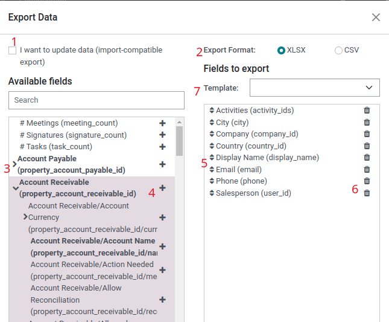

Export and import data
In Odoo, it is sometimes necessary to export or import data for running reports, or for data modification. This document covers the export and import of data into and out of Odoo.
Important
Sometimes, users run into a time out error, or a record does not process, due to its size. This can occur with large exports, or in cases where the import file is too large. To circumvent this limitation surrounding the size of the records, process exports or imports in smaller batches.
Export data from Odoo
When working with a database, it is sometimes necessary to export data in a distinct file. Doing so can aid in reporting on activities, although, Odoo provides a precise and easy reporting tool with each available application.
With Odoo, the values can be exported from any field in any record. To do so, activate the list view ( (list) icon), on the items that need to be exported, then select the records that should be exported. To select a record, tick the checkbox next to the corresponding record. Finally, click on Actions, then Export.

When clicking on Export, an Export Data pop-over window appears, with several options for the data to export:
With the I want to update data (import-compatable export) option ticked, the system only shows the fields that can be imported. This is helpful in the case where the existing records need to be updated. This works like a filter. Leaving the box unticked, gives many more field options because it shows all the fields, not just the ones that can be imported.
When exporting, there is the option to export in two formats:
.csvand.xls. With.csv, items are separated by a comma, while.xlsholds information about all the worksheets in a file, including both content and formatting.These are the items that can be exported. Use the > (right arrow) icon to display more sub-field options. Use the Search bar to find specific fields. To use the Search option more efficiently, click on all the > (right arrows) to display all fields.
The + (plus sign) icon button is present to add fields to the Fields to export list.
The (up-down arrow) to the left of the selected fields can be used to move the fields up and down, to change the order in which they are displayed in the exported file. Drag-and-drop using the (up-down arrow) icon.
The (trash can) icon is used to remove fields. Click on the (trash can) icon to remove the field.
For recurring reports, it is helpful to save export presets. Select all the needed fields, and click on the template drop-down menu. Once there, click on New template, and give a unique name to the export just created. Click the (floppy drive) icon to save the configuration. The next time the same list needs to be exported, select the related template that was previously saved from the drop-down menu.
Tip
It is helpful to know the fields external identifier. For example, Related Company in the export user interface is equal to parent_id (external identifier). This is helpful because then, the only data exported is what should be modified and re-imported.
Import data into Odoo
Importing data into Odoo is extremely helpful during implementation, or in times where data needs to be updated in bulk. The following documentation covers how to import data into an Odoo database.
Warning
Imports are permanent and cannot be undone. However, it is possible to use filters (created
on or last modified) to identify records changed or created by the import.
Tip
Activating developer mode changes the visible import settings in the left menu. Doing so reveals an menu. Included in this advanced menu are two options: Track history during import and Allow matching with subfields.

If the model uses openchatter, the Track history during import option sets up subscriptions and sends notifications during the import, but leads to a slower import.
Should the Allow matching with subfields option be selected, then all subfields within a field are used to match under the Odoo Field while importing.
Get started
Data can be imported on any Odoo business object using either Excel (.xlsx) or CSV (.csv) formats. This includes: contacts, products, bank statements,
journal entries, and orders.
Open the view of the object to which the data should be imported/populated, and click on .

After clicking Import records, Odoo reveals a separate page with templates that can be downloaded and populated with the companys own data. Such templates can be imported in one click, since the data mapping is already done. To download a template click Import Template for Customers at the center of the page.
Important
When importing a CSV file, Odoo provides Formatting
options. These options do not appear when importing the proprietary Excel file type (.xls,
.xlsx).
Make necessary adjustments to the Formatting options, and ensure all columns in the Odoo field and File Column are free of errors. Finally, click Import to import the data.
Adapt a template
Import templates are provided in the import tool of the most common data to import (contacts, products, bank statements, etc.). Open them with any spreadsheet software (Microsoft Office, OpenOffice, Google Drive, etc.).
Once the template is downloaded, proceed to follow these steps:
Add, remove, and sort columns to best fit the data structure.
It is strongly advised to not remove the External ID (ID) column (see why in the next section).
Set a unique ID to every record by dragging down the ID sequencing in the External ID (ID) column.

Note
When a new column is added, Odoo may not be able to map it automatically, if its label does not fit any field within Odoo. However, new columns can be mapped manually when the import is tested. Search the drop-down menu for the corresponding field.

Then, use this fields label in the import file to ensure future imports are successful.
Tip
Another useful way to find out the proper column names to import is to export a sample file using the fields that should be imported. This way, if there is not a sample import template, the names are accurate.
Import from another application
The External ID (ID) is a unique identifier for the line item. Feel free to use one from previous software to facilitate the transition to Odoo.
Setting an ID is not mandatory when importing, but it helps in many cases:
Update imports: import the same file several times without creating duplicates.
To recreate relationships between different records, the unique identifier from the original application should be used to map it to the External ID (ID) column in Odoo.
When another record is imported that links to the first one, use XXX/ID (XXX/External ID) for the original unique identifier. This record can also be found using its name.
Warning
It should be noted that conflicts occur if two (or more) records have the same External ID.
Field missing to map column
Odoo heuristically tries to find the type of field for each column inside the imported file, based on the first ten lines of the files.
For example, if there is a column only containing numbers, only the fields with the integer type are presented as options.
While this behavior might be beneficial in most cases, it is also possible that it could fail, or the column may be mapped to a field that is not proposed by default.
If this happens, check the Show fields of relation fields (advanced) option, then a complete list of fields becomes available for each column.
Change data import format
Note
Odoo can automatically detect if a column is a date, and tries to guess the date format from a
set of most commonly used date formats. While this process can work for many date formats, some
date formats are not recognizable. This can cause confusion, due to day-month inversions; it is
difficult to guess which part of a date format is the day, and which part is the month, in a
date, such as 01-03-2016.
When importing a CSV file, Odoo provides Formatting options.
To view which date format Odoo has found from the file, check the Date Format that is shown when clicking on options under the file selector. If this format is incorrect, change it to the preferred format using ISO 8601 to define the format.
Important
ISO 8601 is an international standard, covering the worldwide exchange, along with the
communication of date and time-related data. For example, the date format should be YYYY-MM-DD.
So, in the case of July 24th 1981, it should be written as 1981-07-24.
Tip
When importing Excel files (.xls, .xlsx), consider using date cells to store dates. This
maintains locale date formats for display, regardless of how the date is formatted in Odoo. When
importing a CSV file, use Odoos Formatting section
to select the date format columns to import.
Import numbers with currency signs
Odoo fully supports numbers with parenthesis to represent negative signs, as well as numbers with currency signs attached to them. Odoo also automatically detects which thousand/decimal separator is used. If a currency symbol unknown to Odoo is used, it might not be recognized as a number, and the import crashes.
Note
When importing a CSV file, the Formatting menu appears on the left-hand column. Under these options, the Thousands Separator can be changed.
Examples of supported numbers (using thirty-two thousand as the figure):
32.000,00
32000,00
32,000.00
-32000.00
(32000.00)
$ 32.000,00
(32000.00 )
Example that will not work:
ABC 32.000,00
$ (32.000,00)
Important
A () (parenthesis) around the number indicates that the number is a negative value. The currency symbol must be placed within the parenthesis for Odoo to recognize it as a negative currency value.
Import preview table not displayed correctly
By default, the import preview is set on commas as field separators, and quotation marks as text delimiters. If the CSV file does not have these settings, modify the Formatting options (displayed under the Import CSV file bar after selecting the CSV file).
Important
If the CSV file has a tabulation as a separator, Odoo does not detect the separations. The file format options need to be modified in the spreadsheet application. See the following Change CSV file format section.
Change CSV file format in spreadsheet application
When editing and saving CSV files in spreadsheet applications, the computers regional settings are applied for the separator and delimiter. Odoo suggests using OpenOffice or LibreOffice, as both applications allow modifications of all three options (from LibreOffice application, go to ).
Microsoft Excel can modify the encoding when saving ().
Difference between Database ID and External ID
Some fields define a relationship with another object. For example, the country of a contact is a link to a record of the Country object. When such fields are imported, Odoo has to recreate links between the different records. To help import such fields, Odoo provides three mechanisms.
Important
Only one mechanism should be used per field that is imported.
For example, to reference the country of a contact, Odoo proposes three different fields to import:
Country: the name or code of the country
Country/Database ID: the unique Odoo ID for a record, defined by the ID PostgreSQL column
Country/External ID: the ID of this record referenced in another application (or the
.XMLfile that imported it)
For the country of Belgium, for example, use one of these three ways to import:
Country:
BelgiumCountry/Database ID:
21Country/External ID:
base.be
According to the companys need, use one of these three ways to reference records in relations. Here is an example when one or the other should be used, according to the need:
Use Country: this is the easiest way when data comes from CSV files that have been created manually.
Use Country/Database ID: this should rarely be used. It is mostly used by developers as the main advantage is to never have conflicts (there may be several records with the same name, but they always have a unique Database ID)
Use Country/External ID: use External ID when importing data from a third-party application.
When External IDs are used, import CSV files with the
External ID (ID) column defining the External ID of each record that is imported.
Then, a reference can be made to that record with columns, like Field/External ID. The following
two CSV files provide an example for products and their categories.
Import relation fields
An Odoo object is always related to many other objects (e.g. a product is linked to product categories, attributes, vendors, etc.). To import those relations, the records of the related object need to be imported first, from their own list menu.
This can be achieved by using either the name of the related record, or its ID, depending on the
circumstances. The ID is expected when two records have the same name. In such a case add / ID
at the end of the column title (e.g. for product attributes: Product Attributes / Attribute / ID).
Options for multiple matches on fields
If, for example, there are two product categories with the child name Sellable (e.g. Misc.
Products/Sellable & Other Products/Sellable), the validation is halted, but the data may still be
imported. However, Odoo recommends that the data is not imported because it will all be linked to
the first Sellable category found in the Product Category list (Misc. Products/Sellable).
Odoo, instead, recommends modifying one of the duplicates values, or the product category
hierarchy.
However, if the company does not wish to change the configuration of product categories, Odoo recommends making use of the External ID for this field, Category.
Import many2many relationship fields
The tags should be separated by a comma, without any spacing. For example, if a customer needs to be
linked to both tags: Manufacturer and Retailer then Manufacturer,Retailer needs to be encoded
in the same column of the CSV file.
Import one2many relationships
If a company wants to import a sales order with several order lines, a specific row must be reserved in the CSV file for each order line. The first order line is imported on the same row as the information relative to order. Any additional lines need an additional row that does not have any information in the fields relative to the order.
As an example, here is a CSV file of some quotations that can be imported, based on demo data:
The following CSV file shows how to import purchase orders with their respective purchase order lines:
The following CSV file shows how to import customers and their respective contacts:
Import records several times
If an imported file contains one of the columns: External ID or Database ID, records that have already been imported are modified, instead of being created. This is extremely useful as it allows users to import the same CSV file several times, while having made some changes in between two imports.
Odoo takes care of creating or modifying each record, depending if it is new or not.
This feature allows a company to use the Import/Export tool in Odoo to modify a batch of records in a spreadsheet application.
Value not provided for a specific field
If all fields are not set in the CSV file, Odoo assigns the default value for every non-defined field. But, if fields are set with empty values in the CSV file, Odoo sets the empty value in the field, instead of assigning the default value.
Export/import different tables from an SQL application to Odoo
If data needs to be imported from different tables, relations need to be recreated between records belonging to different tables. For instance, if companies and people are imported, the link between each person and the company they work for needs to be recreated.
To manage relations between tables, use the External ID facilities of Odoo. The External ID of a
record is the unique identifier of this record in another application. The External ID must be
unique across all records of all objects. It is a good practice to prefix this External ID with
the name of the application or table. (like, company_1, person_1 - instead of 1)
As an example, suppose there is an SQL database with two tables that are to be imported: companies and people. Each person belongs to one company, so the link between a person and the company they work for must be recreated.
Test this example, with a sample of a PostgreSQL database.
First, export all companies and their External ID. In PSQL, write the following command:
> copy (select 'company_'||id as "External ID",company_name as "Name",'True' as "Is a Company" from companies) TO '/tmp/company.csv' with CSV HEADER;
This SQL command creates the following CSV file:
External ID,Name,Is a Company
company_1,Bigees,True
company_2,Organi,True
company_3,Boum,True
To create the CSV file for people linked to companies, use the following SQL command in PSQL:
> copy (select 'person_'||id as "External ID",person_name as "Name",'False' as "Is a Company",'company_'||company_id as "Related Company/External ID" from persons) TO '/tmp/person.csv' with CSV
It produces the following CSV file:
External ID,Name,Is a Company,Related Company/External ID
person_1,Fabien,False,company_1
person_2,Laurence,False,company_1
person_3,Eric,False,company_2
person_4,Ramsy,False,company_3
In this file, Fabien and Laurence are working for the Bigees company (company_1), and Eric is
working for the Organi company. The relation between people and companies is done using the
External ID of the companies. The External ID is prefixed by the name of the table to avoid a
conflict of ID between people and companies (person_1 and company_1, who shared the same ID 1 in
the original database).
The two files produced are ready to be imported in Odoo without any modifications. After having imported these two CSV files, there are four contacts and three companies (the first two contacts are linked to the first company). Keep in mind to first import the companies, and then the people.
Update data in Odoo
Existing data can be updated in bulk through a data import, as long as the External ID remains consistent.
Prepare data export
To update data through an import, first navigate to the data to be updated, and select the (list) icon to activate list view. On the far-left side of the list, tick the checkbox for any record to be updated. Then, click Actions, and select Export from the drop-down menu.
On the resulting Export Data pop-up window, tick the checkbox labeled, I want to update data (import-compatible export). This automatically includes the External ID in the export. Additionally, it limits the Fields to export list to only include fields that are able to be imported.
Note
The External ID field does not appear in the Fields to export list unless it is manually added, but it is still included in the export. However, if the I want to update data (import-compatible export) checkbox is ticked, it is included in the export.
Select the required fields to be included in the export using the options on the pop-up window, then click Export.
Import updated data
After exporting, make any necessary changes to the data file. When the file is ready, it can be imported by following the same process as a normal data import.
Danger
When updating data, it is extremely important that the External ID remain consistent, as this is how the system identifies a record. If an ID is altered, or removed, the system may add a duplicate record, instead of updating the existing one.